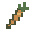
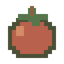
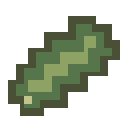
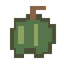
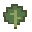
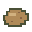

08 · Broccoli
ingredient.broccoli


128px / 32px · light
128px / 32px · dark
v2 candidate · sheet 1/2 · exact 32px chat size and 4x enlargement on light/dark plates











Curated coverage, not user-log coverage. Artwork is not evidence of portion, nutrition, cooking state or allergens. Not integrated.